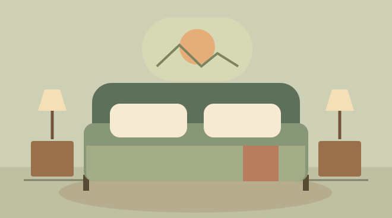

02 / QUARTOS
Um quarto para desacelerar
Combine luz suave, tecidos confortáveis e espaço livre perto da cama.

01
Escolha uma cor de base
Use um tom claro nas peças maiores e repita uma cor de destaque na manta e em um detalhe do quarto. Compare as cores à luz do dia e com a iluminação da noite.
02
Ilumine a leitura
Coloque uma luminária direcionável ao lado da cama. Ajuste o foco para alcançar o livro sem iluminar diretamente o rosto.
03
Deixe a cabeceira livre
Mantenha por perto apenas os objetos usados antes de dormir. Uma bandeja pequena reúne óculos e acessórios, enquanto caixas sob a cama podem guardar roupas de outra estação.